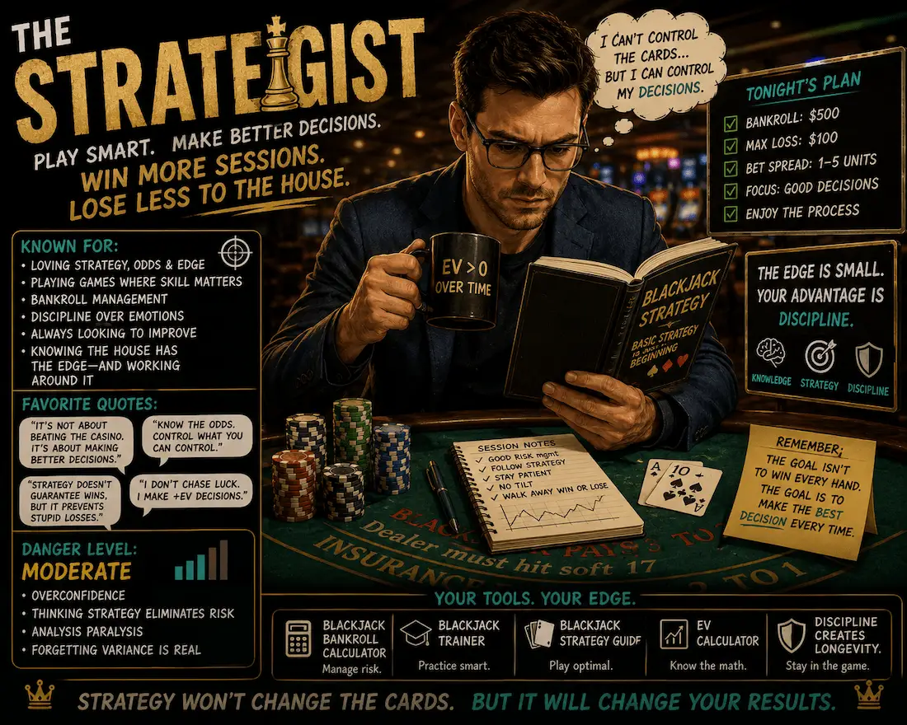
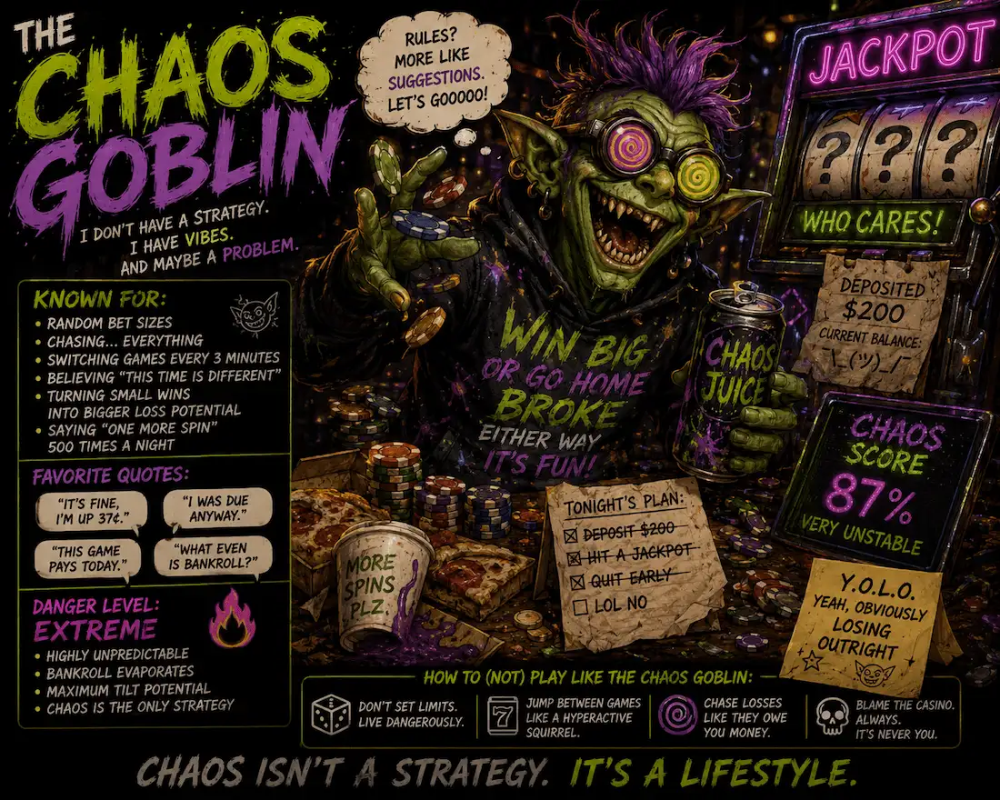

The Chaser
Losses feel temporary, so stop points matter.
You might be a Chaser, Grinder, Heater Hunter, Strategist, or Wild Card. We will not reveal which answers point where until you finish.
Losses feel temporary, so stop points matter.

Low stakes, long sessions, and quiet bankroll drift.

Here for volatility, big hits, and high-variance decisions.

House-edge aware, still exposed to variance.

Fast decisions, loose rules, real bankroll pressure.
This quiz is entertainment, but the leaks are familiar: chasing, overconfidence, boredom, and calling chaos a strategy.
The win does not get closer because the loss feels important.
Your bankroll needs limits before the session starts.
Confidence is not a probability model.
Big wins happen. Giving them back is optional.
If one of these lines feels too familiar, the quiz will probably be useful.
Your bet size starts reacting to the last result instead of the plan.
Low stakes help, but endless volume can still leak bankroll.
Big-hit potential comes with long dry stretches.
Use limits and tools. Strategy reduces mistakes, not variance.
The casino does not care about your archetype. These tools show bet pressure, variance, and decision cost before the session starts.
Estimate session risk before choosing your budget and bet size.
Use the bankroll calculatorPractice decisions where strategy matters before real money is involved.
Train blackjack decisionsWatch how volatility affects bankroll swings before choosing a slot session.
Try the slot simulatorIt is mostly entertainment, but the behaviors are based on real gambling patterns like chasing losses, bankroll bleed, volatility seeking, and overconfidence.
Yes. Big wins can happen. The issue is that the house edge and variance still matter over time.
Giving the win back because they never decided when to stop.
Start with the bankroll calculator, because bet size controls how much pressure you put on your money.
No. Strategy can reduce mistakes, but it does not erase the house edge or variance.
Whatever personality pops out, the smart next move is the same: know your limits, understand variance, and keep the fun from becoming a payment plan.